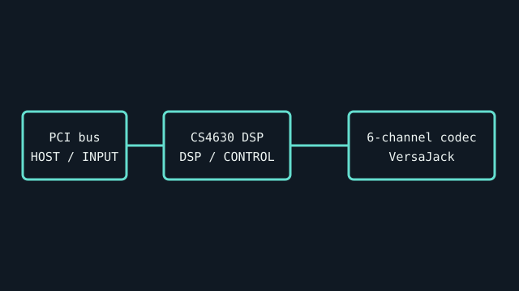

[ INDIVIDUAL COMPONENT // SOUND HARDWARE ]
Turtle Beach Santa Cruz (model 3290)
A PCI sound card based on the Crystal CS4630 SoundFusion DSP. Santa Cruz model 3290 has configurable VersaJack behavior and a distinct bundled software/driver generation.

IDENTIFICATION: Match the complete printed model, revision, bundled breakout, and accessory markings. Specs below describe this named model; family-level variants are not assumed interchangeable.
Specifications
| Catalog subcategory | PCI sound cards |
|---|---|
| Product ID | Turtle Beach Santa Cruz PCI sound card, model 3290 |
| Bus / host | 32-bit conventional PCI add-in card; not PCI Express. Confirm motherboard slot compatibility. |
| Connectors and I/O | Six-channel analog output via 3.5 mm jacks, line and microphone inputs, game/MIDI port, and VersaJack configurable for digital or analog use according to software. Jack assignments are driver-configurable. |
| Chipset / conversion / protocol | Crystal CS4630 SoundFusion processor; maximum documented audio path is 20-bit/48 kHz. Supports multichannel analog output and digital output through the configurable VersaJack. |
| Drivers / operating systems | Turtle Beach VxD drivers targeted Windows 98/98SE/Me; WDM driver sets were provided for Windows 2000/XP. Do not assume support on current Windows or PCIe-only systems. |
| Variant compatibility | Verify model 3290, CS4630 chip marking, bracket, and retail/manual package. Santa Cruz is distinct from Turtle Beach Montego/Aureal cards. VersaJack’s role depends on the matched control panel and driver. |
Service & preservation
Keep the original driver CD/manual and record OS/driver version, device ID, jack assignment, and any wavetable header. Check the bracket and sockets for strain and preserve any MIDI/gameport adapter.
Identification and compatibility checks
- Photograph the product/model label, board silkscreen/revision, connector faces, cable assemblies, and accessory part numbers before installation.
- Check electrical bus and host slot or USB/MIDI protocol support against the exact manual; connector shape alone does not establish compatibility.
- For analog I/O, confirm line/mic/instrument level, phantom-power behavior, channel map, and direction from the model-specific documentation before connecting equipment.
- When software or driver support is uncertain, preserve the last known-good installer and document tested host OS, driver version, and device identifier.
Primary manufacturer & standards sources
- Turtle Beach Santa Cruz User Guide (manufacturer manual scan)Model-era user guide archive; verify the manual’s version/model against the 3290 card.
- Turtle Beach Santa Cruz retail CD archivePreserved installation media and bundled driver software; use OS/revision-specific package.
- Santa Cruz model notes and archived manufacturer-era documentation referencesModel identification cross-reference; original manual and driver media take precedence.
Source selection is model-specific where an original manual or vendor product/support page exists. Archived scans preserve manufacturer documentation; operating-system claims are limited to what the cited product/manual materials identify.